วงจรข่ายความต้านทานที่มีแหล่งกำเนิดแรงดันอิสระบนกิ่งที่ 2 และแหล่งกำเนิดกระแสอิสระบนกิ่งที่ 1 แก้ด้วยเมทริกซ์ tie-set
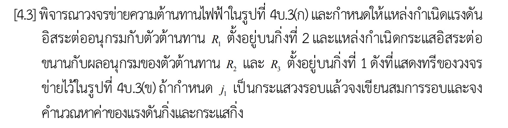
[4.3] พิจารณาวงจรข่ายความต้านทานไฟฟ้าในรูปที่ 4บ.3(ก) และกำหนดให้แหล่งกำเนิดแรงดันอิสระ ต่ออนุกรมกับตัวต้านทาน R1 ตั้งอยู่บนกิ่งที่ 2 และแหล่งกำเนิดกระแสอิสระต่อขนานกับผลอนุกรม ของตัวต้านทาน R2 และ R3 ตั้งอยู่บนกิ่งที่ 1 ดังที่แสดงทรีของวงจรข่ายไว้ในรูปที่ 4บ.3(ข) ถ้ากำหนด j1 เป็นกระแสวงรอบ แล้วจงเขียนสมการรอบและจงคำนวณหาค่าของแรงดันกิ่งและกระแสกิ่ง
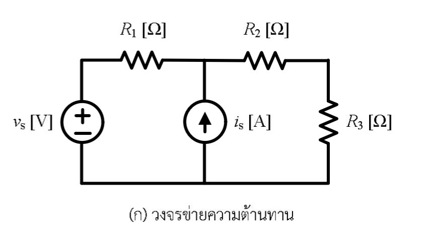
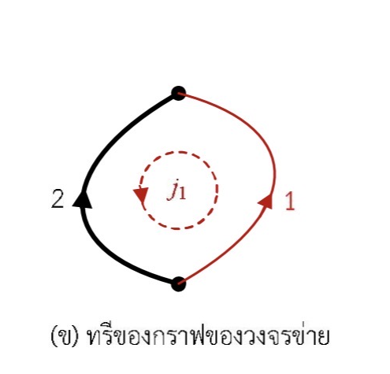
ลูกศรบนกิ่งบอกทิศของกระแสกิ่ง และวางขั้ว + ของแรงดันกิ่งไว้ที่ หางลูกศร (associated reference direction) ทำให้ตัวต้านทานเป็นไปตาม v = Ri โดยตรง ผลที่ตามมาคือ vk = v(o) − v(a) สำหรับทั้งสองกิ่งในโจทย์นี้
ให้ RT ≡ R1 + R2 + R3
เครื่องหมายลบมาจากการวางขั้ว + ไว้ที่ปม o ถ้าอ่านเป็นแรงดันของปม a จะได้ค่าบวก: v(a) = +(R2+R3)(vs+R1is)/RT
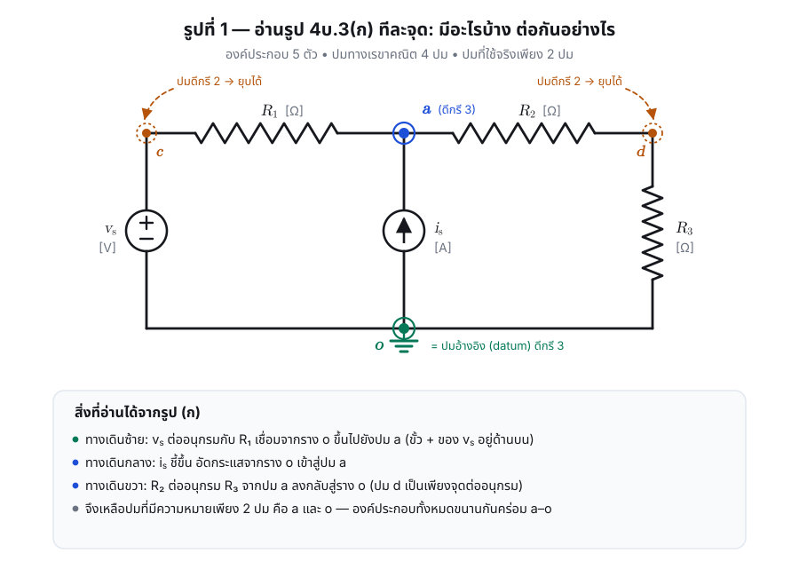
| จุด | ตำแหน่ง | ดีกรี | สถานะ |
|---|---|---|---|
| a | ปมกลางบน — จุดร่วมของ R₁, iₛ, R₂ | 3 | ปมจริง |
| o | รางล่างทั้งเส้น — จุดร่วมของ vₛ, iₛ, R₃ | 3 | ปมจริง เลือกเป็นปมอ้างอิง |
| c | ยอดเสาซ้าย — ระหว่าง vₛ กับ R₁ | 2 | ยุบได้ (จุดต่ออนุกรม) |
| d | มุมขวาบน — ระหว่าง R₂ กับ R₃ | 2 | ยุบได้ (จุดต่ออนุกรม) |
ปมที่มีดีกรี 2 ไม่ให้สมการ KCL ที่เป็นอิสระเพิ่ม (กระแสเข้าเท่ากับกระแสออกโดยอัตโนมัติ) จึงยุบรวมองค์ประกอบสองตัวที่ต่ออยู่ให้เป็นกิ่งประกอบเดียวได้โดยไม่เปลี่ยนพฤติกรรมของวงจร
ระวัง: ที่ปม d ไม่มีทางแยก ดังนั้น R2 กับ R3 ต่อ อนุกรม กัน ความต้านทานของทางเดินนี้คือ R2+R3 ไม่ใช่ R2∥R3
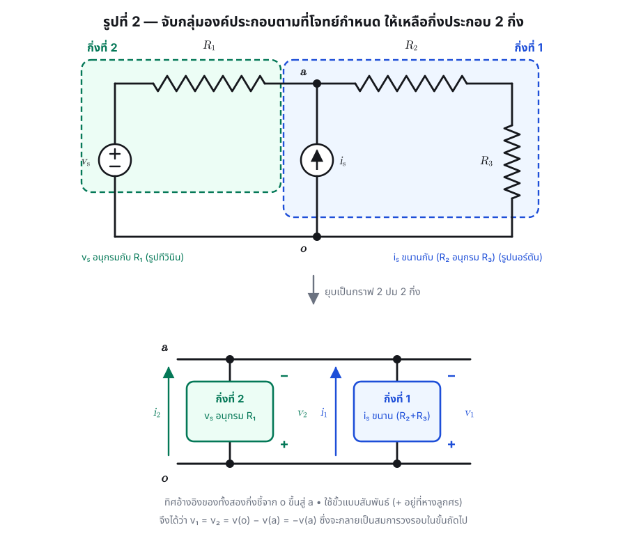
| กิ่ง | องค์ประกอบภายใน | รูปแบบ | เชื่อมปม |
|---|---|---|---|
| กิ่งที่ 2 | vs อนุกรม R1 | รูปทีวินิน | o → a |
| กิ่งที่ 1 | is ขนาน (R2 อนุกรม R3) | รูปนอร์ตัน | o → a |
ประโยชน์ของกิ่งประกอบคือ ย้ายความซับซ้อนไปไว้ในสมการเฉพาะกิ่ง แทนที่จะไปเพิ่มจำนวนสมการ ที่ต้องแก้ — กราฟที่ได้เล็กที่สุดเท่าที่จะเป็นไปได้
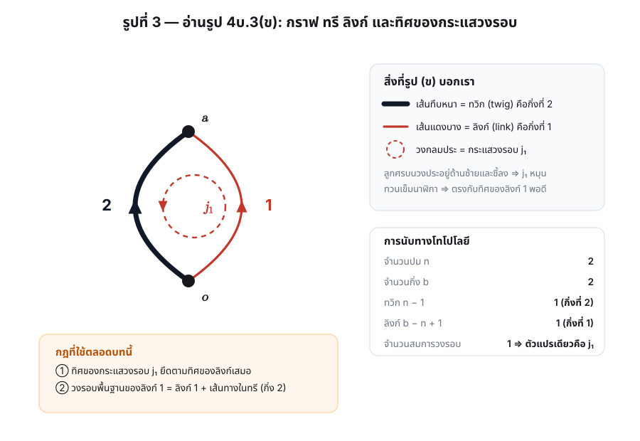
| สิ่งที่เห็นในภาพ | ความหมาย |
|---|---|
| จุดทึบ 2 จุด | ปม 2 ปม ⇒ n = 2 (จุดบนคือปม a, จุดล่างคือปม o) |
| เส้นทึบหนาสีดำ เลข 2 | กิ่งที่ 2 เป็น ทวิก (twig) — อยู่ในทรี |
| เส้นบางสีแดง เลข 1 | กิ่งที่ 1 เป็น ลิงก์ (link) — อยู่นอกทรี |
| หัวลูกศรกลางเส้นทั้งสองชี้ขึ้น | ทิศอ้างอิงของกระแสกิ่งทั้งสองคือ o → a |
| หัวลูกศรบนวงประอยู่ด้านซ้ายและชี้ลง | j1 หมุน ทวนเข็มนาฬิกา |
j1 ทวนเข็มนาฬิกา ⇒ ด้านขวาของวงรอบวิ่งขึ้น ซึ่งตรงกับทิศของกิ่งที่ 1 (ลิงก์) พอดี เป็นไปตามกฎที่ว่า ทิศของกระแสวงรอบต้องยึดตามทิศของลิงก์เสมอ ขณะที่ด้านซ้ายวิ่งลง ซึ่งสวนทางกับกิ่งที่ 2
จำนวนสมการรอบอิสระ = จำนวนลิงก์ = 1 สมการ ⇒ ทั้งวงจรมีตัวแปรอิสระตัวเดียวคือ j1
ขั้นนี้เป็นจุดเดียวที่ค่า R, vs, is เข้ามาในระบบสมการ
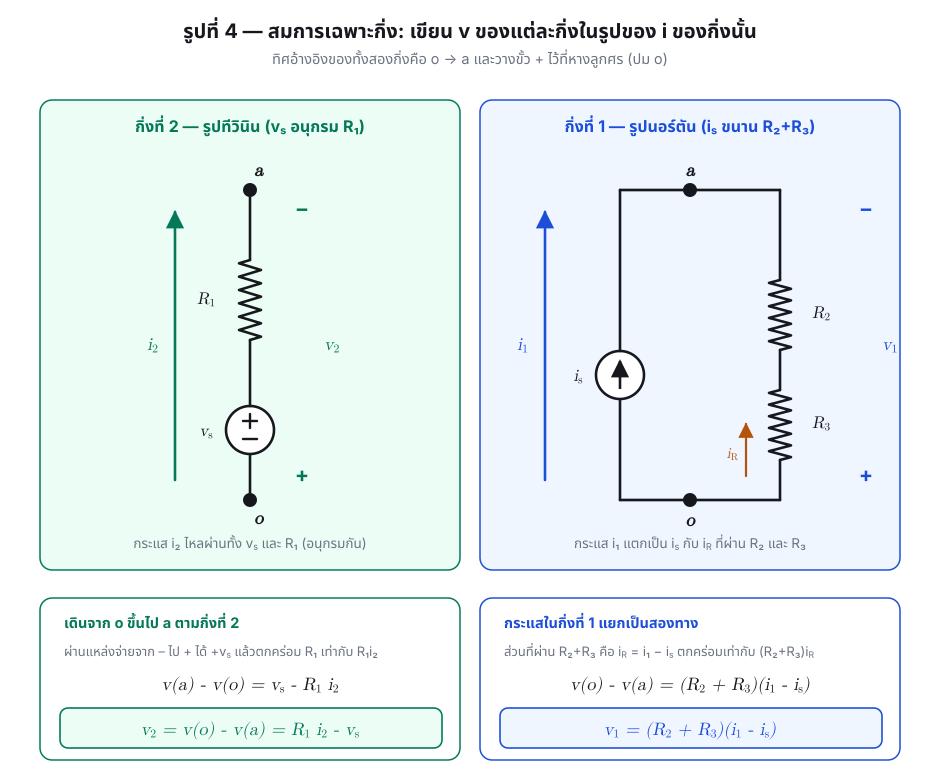
เดินจากปม o ขึ้นไปปม a: ผ่านแหล่งจ่ายจากขั้ว − ไป + ⇒ ศักย์เพิ่ม vs แล้วตกคร่อม R1 ⇒ ศักย์ลด R1i2
กระแสของกิ่งแยกสองทาง: i1 = is + iR ส่วนที่ผ่าน R2, R3 คือ iR = i1 − is
อย่าเขียน v1 = (R2+R3) i1 เพราะกระแสของแหล่งจ่าย is ไม่ได้ไหลผ่านตัวต้านทาน ต้องหักออกก่อนเสมอ
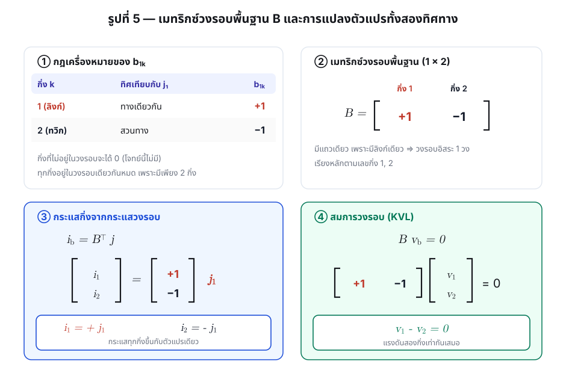
| กิ่ง k | อยู่ในวงรอบ? | ทิศเทียบกับ j₁ | b1k |
|---|---|---|---|
| 1 (ลิงก์) | ใช่ | ทางเดียวกัน | +1 |
| 2 (ทวิก) | ใช่ | สวนทาง | −1 |
| +1 | −1 |
ตรวจ: KCL ที่ปม a ต้องได้ i1+i2=0 และ j1+(−j1)=0 ✓
ตรวจ: ทั้งสองกิ่งคร่อมปมคู่เดียวกันและวางขั้วเหมือนกัน แรงดันจึงต้องเท่ากัน ✓
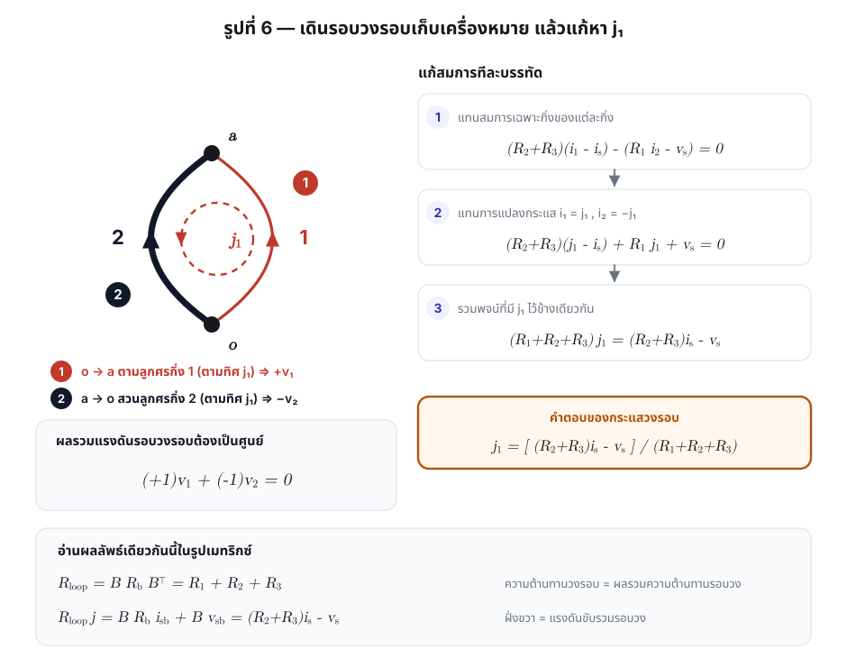
| ก้อน | คำนวณได้ | ความหมายทางกายภาพ |
|---|---|---|
| Rloop = B Rb B⊤ | (R2+R3) + R1 = RT | ผลรวมความต้านทานที่พบเมื่อเดินครบรอบวง |
| B Rb isb | (R2+R3) is | แรงดันสมมูลแบบทีวินินของแหล่งกระแสในกิ่งที่ 1 |
| B vsb | −vs | ติดลบเพราะ vₛ ดันในทิศสวนกับ j₁ |
ผลรวมให้ RT j1 = (R2+R3)is − vs ตรงกับที่แก้มือ ✓
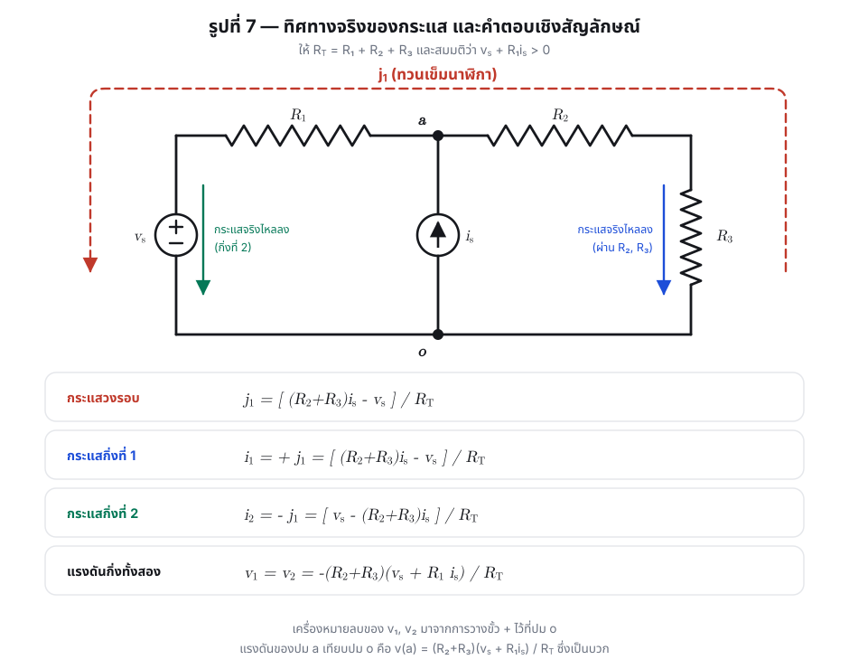
สองทางให้ผลตรงกัน และสอดคล้องกับ v1 − v2 = 0 ที่ได้จาก KVL ✓
| ปริมาณ | นิพจน์ | ทิศ / ขั้ว |
|---|---|---|
| กระแสผ่าน R₁ และ vₛ | i2 = [vs − (R2+R3)is] / RT | ทิศ o → a |
| กระแสผ่าน R₂, R₃ | iR = −(vs + R1is) / RT | ทิศ o → a (ค่าลบ ⇒ ไหลจริงจาก a → o) |
| แรงดันคร่อม R₂ | R2(vs+R1is) / RT | + ที่ด้านปม a |
| แรงดันคร่อม R₃ | R3(vs+R1is) / RT | + ที่ด้านบน |
| แรงดันคร่อมแหล่งกระแส | v(a) = (R2+R3)(vs+R1is) / RT | + ที่ด้านบน |
เขียน KCL ที่ปม a จากรูป (ก) โดยตรง โดยให้ v(o)=0
ตรงกับข้อ 9 ทุกประการ ทั้งที่ใช้กฎคนละข้อ (KCL แทน KVL) และตัวแปรคนละชุด ✓
| กรณี | สูตรให้ | ผลที่ควรเป็นทางกายภาพ |
|---|---|---|
| is = 0 | i2 = vs/RT | vₛ ขับกระแสผ่าน R₁, R₂, R₃ ที่อนุกรมกันทั้งหมด ✓ |
| vs = 0 | i2 = −(R2+R3)is/RT | ตัวแบ่งกระแส: iₛ แบ่งลงกิ่ง R₁ ตามสัดส่วน (R₂+R₃)/R_T ✓ |
| R2+R3 → ∞ | j1 → is | ทางความต้านทานเปิดวงจร กระแสกิ่งที่ 1 ต้องเท่ากับ iₛ พอดี ✓ |
| R1 → 0 | v(a) → vs | vₛ ต่อตรงคร่อมปม a–o ✓ |
ให้ m1, m2 เป็นกระแสเมชซ้าย–ขวา หมุนตามเข็มนาฬิกาทั้งคู่ แหล่งกระแสอยู่บนกิ่งร่วมจึงต้องใช้ supermesh
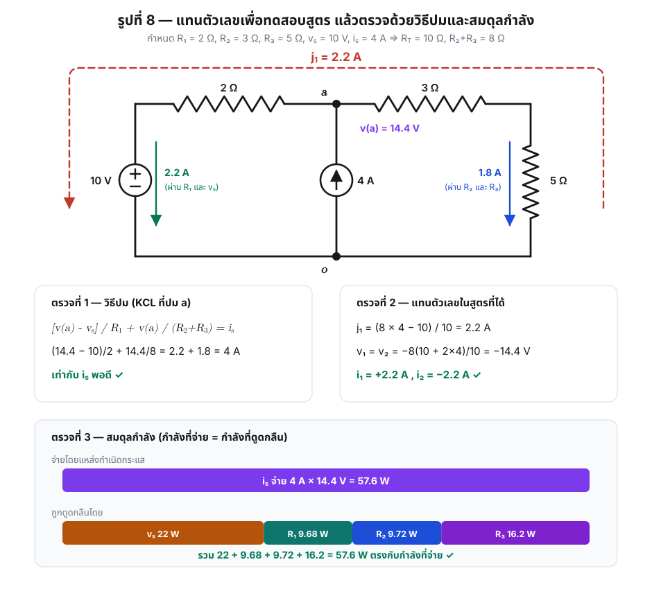
| ปริมาณ | ค่า |
|---|---|
| j1 | (8×4 − 10)/10 = 2.2 A |
| i1 , i2 | +2.2 A , −2.2 A |
| v1 = v2 | −8(10+8)/10 = −14.4 V |
| v(a) | +14.4 V |
| ตรวจ KCL ที่ปม a | (14.4−10)/2 + 14.4/8 = 2.2 + 1.8 = 4 A = iₛ ✓ |
| ตรวจสมดุลกำลัง | 22 + 9.68 + 9.72 + 16.2 = 57.6 W = 4 A × 14.4 V ✓ |
| # | กับดัก | ผลที่เกิด | วิธีกันพลาด |
|---|---|---|---|
| 1 | กำหนดทิศ j₁ ตามใจ ไม่ยึดทิศลิงก์ | ได้ i₁ = −j₁ เครื่องหมายกลับหมด | ท่องกฎ: ทิศกระแสวงรอบ = ทิศลิงก์เสมอ |
| 2 | ใช้ v₁ = (R₂+R₃) i₁ | ลืมหักกระแสของแหล่งจ่าย ผิดทั้งข้อ | กิ่งนอร์ตันต้องใช้ (i₁ − iₛ) |
| 3 | คิดว่า R₂ ขนาน R₃ | ได้ R₂R₃/(R₂+R₃) แทน R₂+R₃ | ดูปม d — ดีกรี 2 ไม่มีทางแยก ⇒ อนุกรม |
| 4 | วางขั้ว + ของ vk ไว้ที่หัวลูกศร | เครื่องหมายของ v₁, v₂ กลับด้าน | ประกาศข้อตกลงให้ชัดแล้วใช้ตลอด |
| 5 | ลืมว่า vₛ ยกศักย์ขึ้นในทิศ o → a | ได้ v₂ = R₁i₂ + vₛ | ไล่เดินจากขั้ว − ไป + แล้วบวก vₛ |
| 6 | ไม่ยุบปมดีกรี 2 | ได้ b=5, n=4, l=2 ต้องแก้ 2 สมการ | คำตอบยังถูก แต่ยาวกว่าโดยไม่จำเป็น |
| 7 | ตกใจที่ v₁, v₂ ติดลบ | คิดว่าคำนวณผิด | ค่าลบเป็นเรื่องปกติ แปลว่าศักย์ที่ปม a สูงกว่าปม o |